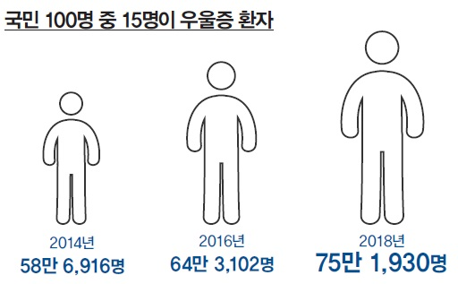
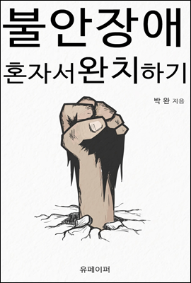
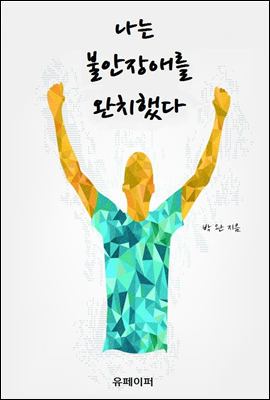
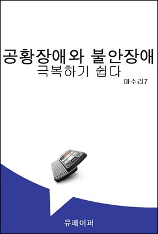
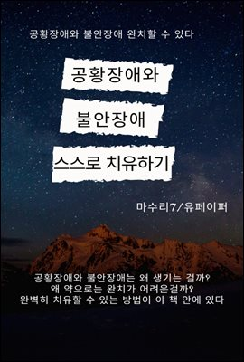

저는 한국에서 태어나고 자란 30대 남성입니다.
저는 20년 넘게 사회불안장애와 싸우고 있습니다.
현재는 경쟁이 심하고 압력이 거친 한국사회를 떠나 일본으로 도피하여
멘탈케어에 집중하며 마음을 회복하는 일에 전력투구하고 있습니다.
저는 의사도 아니고 연구자도 아니며 한명의 환자로서,
취약한 영혼으로서 이 글을 쓰고 있습니다.
이것은 불안장애 극복기가 아니라 불안장애를 가지고 살아남기 위한 생존 서적에 가깝습니다.
불안과 우울의 기질을 가지고 타고 난 사람에게 완치란 매우 어려운 일입니다.
스트레스에 취약한 우리가 고통에 덜 민감한 일반인들처럼
아무렇지 않듯이 살아가는 것은 불가능에 가깝습니다.
우울증이나 정신질환에 관한 다양한 서적이나 마음공부 관련 서적들이 즐비해 있지만
그런 자기계발 책들을 읽는다고 갑자기 아픔이 사라질 리도 없습니다.
불안장애는 일상생활에 지장을 초래하는 질환입니다.
유병률이 높은 장애고, 미국정신의학회가 작성한 정신질환분류인
DSM-IV진단기중에 해당하는 유병률은 일반인구의 1.4~12.1%가 보고되고 있습니다.
일본의 경우에는 우울증, 기분장애, 불안장애 등으로 인한 휴직자를 가진 기업이 많아
사회적 과제가 되고 있습니다.
그러나 불안장애는 사회에서 잘 인식되지 않고 있는 질병이며,
다른 장애와는 다르게, 있어도 그냥 넘어가기 쉬운 정신병입니다.
게다가 정신질환은 장애로 인정되지 않아 여러가지 사회적 문제가 발생하고 있습니다.
여전히 정신력 운운하며 모든 잘못을 개인의 탓으로 넘기는 집단주의 사회에서는 특히나
그러나 감기를 방치하면 폐렴이 되고 폐암이 되듯이,
어린시절 또는 청소년기때부터 형성된 불안장애를 방치해두면
여타 다른 질병과 마찬가지로 여러가지 합병증을 유발하여 우울증, 강박장애, 조현병 등으로 증세가 악화되다가
마침내 극단적인 선택에 이르기까지 하는 매우 위험한 병입니다.
내색하지 않고 가만히 있던 사람이 어느날 갑자기 돌발행동을 하는것도 마찬가지로
그 누구에게도 이해받지 못할것이라고 결론지어버린 불안장애 환자의 마지막 발버둥이라고 생각해도 무방합니다.
한가지 확실한것은, 영혼을 갉아먹는 이런 마음의 병을 그대로 방치하다가는
자살까지 하지는 않더라도 평생에 걸쳐 비참한 삶을 살게되며,
할수있는 일도 못하게 되고, 가능한것도 불가능하게 되어버리는,
말그대로 팔이나 다리가 잘린 사람과 같은 수준의 상태가 되어버린다는 것입니다.
여러분은 당신의 가족이나 친구가 이렇게 폐인이 되어버리는것을 바라십니까?
당사자 입장에서는 죽는것만도 못하는 삶을 살아갈 가능성이 큽니다.
현재 대한민국은 OECD국가중 자살률 1위를 기록하는 심각한 정신병의 나라임에도 불구하고
선진국을 자처하면서도 죽어가는 수많은 영혼들을 위한 정신적 안전망에 대한 제도나 연구는 매우 처참한 실정입니다.
이제 한 사람 개개인은 인간으로서의 인격이나 존엄을 빼앗겨버렸고
경제력,생산성,경쟁력,성과등으로 판단되는 그저 하나의 기계부품이 되어버렸습니다.
행복도나 만족도는 후진국만도 못하고, 불행한 마음 상태를 가지고 하루하루 버티며 살아가는 이들에게
그 어떤 발전가능성이나 미래가 있겠습니까?

우울증 뿐만 아니라, 불안장애와 강박증을 포함한 각종 스트레스성 노이로제 환자들,
그리고 돈과 시간이 없어서 병원을 가지도 못하는 수많은 서민들을 포함하면
전체 국민의 절반이상이 정신에 문제가 있다고 봐도 과언이 아닐것입니다.
국가적인 질병임에도 불구하고 이에대한 사회적 인식이 부족하다는 것은
모두가 눈을감고 낭떠러지로 걸어가고 있는것으로 밖에 보이지 않습니다.
먹고사니즘에 빠져서 마음의 공허함과 불안요소를 그저 돈으로만 채우려다가 죽어버리는 인생이 되어버리는것입니다.
그러나 이 책의 목적이 가망이 없는 사회개선이나 국민성 개혁따위는 아니기 때문에,
저는 여러분 내면에 남모르는 불안과 고통과 우울을 오랫동안 가지고 계신 분들 개개인의 짐을 덜어드리고
세상과는 무관하게 자신만의 살아가는 방식을 구축하는 마음가짐을 알려드리려고 합니다.
서론에서도 기술하였으나, 한국같은 집단주의사회에서는
개개인의 멘탈이나 정신적 고통에 관해서는 무관심하기 마련입니다.
개인의 행복도나 동기부여같은 요소들을 전혀 고려하지 않고 자원으로밖에 보지않는 사회에서는
그저 처벌과 채찍으로 사람들을 다루려는 경향이 있습니다.
이런 상황에서 나약한 소리를 하는 사람들은 사회에서 배제되거나 불이익을 받게 되며
정신적으로 취약한 경향을 타고난 사람들은 숨어지내거나 지옥같은 일상을 경험하면서 살아야 되는 실정입니다.
하지만 점점 시간이 지나면서 정신적 취약을 호소하는 사람들이 많아지고,
스트레스로 인한 합병증이 계속 발병되는 가운데
정신과 육체의 상관관계에 대한 중요성이 사회적으로 크게 퍼져가고 있으나
실상은 이런 정신의학적 분야에 대한 연구로서는 그저 약물에 대한 연구정도가 진행되고있거나
환자 개인의 사고방식을 개조하는 인지행동 치료방식정도의 임상실험 단계에 머물러 있을 뿐입니다.
다른 선진국처럼 멘탈케어에 대한 대중적인 인식이나 개선은 찿아볼 수 없는 실정입니다.
또한 개개인에 대한 정신적 지원이 없기에 모든 치료나 문제해결을 개인의 책임으로 전가하여
이런 불안장애를 극복한 사람들도 사회나 기관의 도움을 받지 못하고 스스로 해결하는 경우가 대부분입니다.




지금은 예전보다 정신의학과 병원에 대한 인식이나 심리상담에 대한 인식이 많이 개선된 상황이나
그럼에도 불구하고 비용적인 측면이나 생활고로 인해
치료를 시작하더라도 도중에 중단되기 쉽고 또한 대다수의 정신적 질병을 가진 환자들은
사회적 지위가 낮거나 경제상황이 어려운 이들이 대부분이라
경제적 여유가 있는 사람들보다 주위에 서포트나 지지를 받기 어렵습니다.
대부분 그런 열악한 환경에서 생활하는 사람들은 험악한 분위기나 폭력적인 상황에 노출되기 쉬우며
이는 더욱 정신질환을 악화시키는 원인이 됩니다.
더욱이 불안장애나 우울증 환자 개인의 힘으로 집단이나 사회에 맞선다는것은 불가능에 가깝고
주위의 이해나 도움없이 정신질환을 자가극복하기는 극히 어렵습니다.
많은 부모들이나 가족들은 자신의 자녀나 배우자의 고통을 보고도 그저 비난과 비방을 일삼다가
환자의 상황이 극도로 악화되거나 극단적 선택을 할때 겨우 문제를 알아차리게 됩니다.
사실은 뒤늦게라도 알아차리고 힐책과 압력을 중단하면 다행이지만
대다수는 억지로라도 사지로 내몰아서 정신개조를 시키려는 등
완전히 역효과가 생기는 방향으로 환자를 몰아세웁니다.
멀쩡한 일반인들도 전쟁터 같은 극단적 스트레스 상황이나 막대한 빚을 지게 되는등
고통스러운 상황에서는 자살을 생각하고, 군대같은곳에서의 자살사건 등도 드물지 않은데
전혀 준비가 되지않은 아기를 절벽으로 떨어트리는것과 같이 환자를 몰아세우는 방식은
상처에 기름을 붓는 격입니다.
그러면 우울증과 불안장애를 가진 우리들은 어떻게 살아남아야 할까요?
어떻게 하면 이 치열한 경쟁사회와 살아남기 힘든 세상에서 멸종되지 않고 생을 지속해 나갈 수 있을까요?
이에대해 저는 각종 논문들과 자료, 그리고 책들을 참고하여 결론에 도달하려고 합니다.